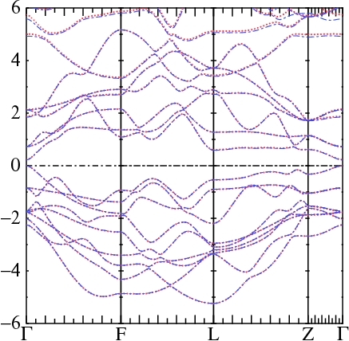
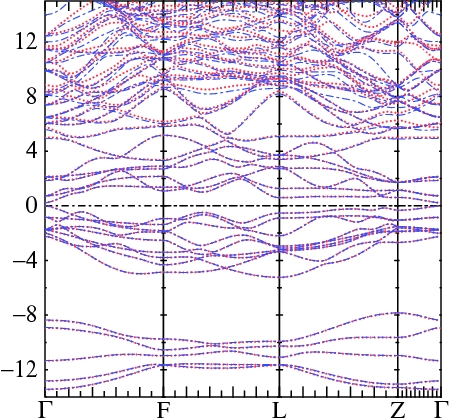

To get started, you must have structural data available (primitive lattice vectors and atoms in the unit cell, along with their positions). You can supply this structural data in one of several possible formats, as described below.
The LMTO programs require as their main input a file ctrl.ext. blm takes as input the basic structural information of a material and generates a skeleton ctrl file from it. You supply the basic structural information with file init.ext, which blm reads to generate the skeleton or template input file. It writes to a file file actrl.ext, not ctrl.ext; you must rename the file yourself. The init file itself can be automatically generated using tools (e.g. cif2init and poscar2init) that import structural data stored in other formats.
Alternatively, you may already have an input (ctrl) file, made perhaps for some compound with similar or the same species, and you only want to change the structural information. Programs in the package allow you to optionally pack structural data into a separate file, site.ext. Several tools, including blm, lmchk, lmscell, cif2site, poscar2site, enable you to write a site file directly.
*Note This tutorial assumes that you installed the executables (e.g. blm and poscar2init) and that they are in your path.
Several quantities, notably the augmentation radius and coefficients defining the shape of the basis of smoothed Hankel functions, can be tedious to determine by hand. Both are explicitly constructed in the Full Potential tutorial; but blm can make both automatically.
*Note blm is a relatively recent addition to this package; it is less seasoned than some of the other codes. Some of the defaults it builds in automatically, e.g. the basis and which deep states should be treated as valence and which as core. These defaults may sometimes not be what you want, or not optimally chosen, so you are advised to use the blm program with some care, and not take for granted the defaults it supplies.
ATOM=Te X=0 0 0
ATOM=Te X=0 0 .788
ATOM=Bi X=0 0 .4
There are five atoms in the basis; the positions of the remaining two
follow from the symmetry of the space group
(R3m).
Symbols Te and Bi tell blm that the atoms are Tellurium and Bismuth, with atomic numbers 52 and 83. You can use any symbol for the species name, but if you don't use a standard one you must specify the atomic number, e.g. write ATOM=A Z=52.
The three coordinates e.g. (0 0 0.788) correspond to fractions of the first, second, and third lattice vectors. This is a standard way of representing site coordinates. Alternatively, you can specify Cartesian coordinates; use POS= in place of X=. In the Bi2Te3 case, substituting the above 3 lines with
ATOM=Te POS= 0.0000000 0.0000000 0.0000000
ATOM=Te POS=-0.5000000 -0.8660254 1.4616199
ATOM=Bi POS= 0.5000000 0.8660254 0.8030878
creates the same input template.
Jump here to see an init file for Bi2Te3 and what happens when you run blm with it.
To import data from a CIF file you need cif2cell installed and cif2init in your path (cif2init should be automatically compiled with this package). The steps are:
1. Run cif2cell (without any special switches) and capture the output in a file, e.g. cif2cell.out. 2. Run cif2init to generate an init file (called simply `init'). 3. Rename init to init.ext and use the blm tool.
Example : create an init file for the orthorhombic form of BaTiO3:
cp testing/cif2cell.batio3 . cif2init cif2cell.batio3Note: cif2cell.batio3 was obtained by running cif2cell on the CIF file supplied with the cif2cell-1.1.0 distribution: cif2cell-1.1.0/cifs/BaTiO3_orthorhombic.cif.
The following init file should be generated:
HEADER Ba (Ti O3) (Barium titanate - nanocrystalline)
LATTICE
# SPCGRP=38
# A=4.0094 B=5.6214 C=5.6386 ALPHA=90 BETA=90 GAMMA=90
% const a=4.0094
ALAT={a} UNITS=A
PLAT= 1.0000000 0.0000000 0.0000000
0.0000000 0.7010276 -0.7031725
0.0000000 0.7010276 0.7031725
SITE
ATOM=Ba X= 0.0000000 0.0000000 0.0000000
ATOM=Ti X= 0.5000000 0.4900000 0.5100000
ATOM=O X= 0.5000000 0.0100000 0.9900000
ATOM=O X= 0.5000000 0.0129000 0.4921000
ATOM=O X= 0.5000000 0.5079000 0.9871000
If you prefer to make your own input file but import structure information via a site file, use cif2site in place of cif2init. To summarize:
cif2init creates an init file from the output of cif2cell cif2site creates a site file from the output of cif2cell
poscar2init creates an init file from a VASP POSCAR file poscar2site creates a site file from a VASP POSCAR fileIf you already have an input file, use poscar2site to translate structural data from a POSCAR file into site.ext. If you want an input file instead, use poscar2init; then run blm.
Example : create an input file for Zn3As2 from a POSCAR file:
testing/test.blm 2The script has the following steps
poscar2init > init.zn3as2 blm zn3as2 --fixpos:tol=1e-6 > out.zn3as2which creates an input file template (actrl.zn3as2) from a POSCAR file in two steps.
Example : create a site file for the Kesterite Cu2ZnSnS4:
testing/test.blm 3It creates file `site' from file `POSCAR.'
# from http://cst-www.nrl.navy.mil/lattice/struk/c33.html
# Bi2Te3 from Wyckoff
% const a=4.3835 c=30.487 uTe=0.788 uBi=0.40
LATTICE
SPCGRP=R-3M
UNITS=A
A={a} C={c}
SITE
ATOM=Te X=0 0 0
ATOM=Te X=0 0 {uTe}
ATOM=Bi X=0 0 {uBi}
This tutorial explains how the input files
init.ext and
ctrl.ext
are structured, including the categories
and tokens that organize it. The syntax is more fully
defined here. You should also read
the ASA documentation and the
FP implementation.
blm bi2te3As the output shows, it found all five atoms that were implicit in the specification of the symmetry group, R-3m.
Note that blm automatically determined augmentation sphere radii, which it accomplishes by attempting to find spheres with equal potentials on each sphere surfaces (as well as it can). If you already have an input file, you can run lmchk with --getwsr to determine radii for you (it uses the same algorithm as blm.) Particularly in polar compounds, this algorithm probably does a better job than you can do by hand, and it is recommended that you use the radii it finds, or some scaled version of them.
blm creates the file actrl.bi2te3 with these contents:
# Autogenerated from init.bi2te3
VERS LM:7 FP:7
IO SHOW=f HELP=f WKP=F IACTIV=f VERBOS=31
% const pwmode=0 pwemax=3 # Use pwmode=1 or 11 to add APWs
HAM AUTOBAS[PNU=1 LOC=1 LMTO=4 MTO=4 GW=0] GMAX= # set GMAX by hand
# AUTOBAS[PNU=1 LOC=1 LMTO=3 MTO=3 GW=0] GMAX= # LMTO=3 for minimal basis
PWMODE={pwmode} PWEMIN=0 PWEMAX={pwemax} OVEPS=0
% const nsp=1 so=0 elind=-.7
NSPIN={nsp} SO={so} FORCES={so==0} ELIND={elind}
% const lxcf=2 lxcf2=-1 # for PBE functional use lxcf=101 lxcf2=130
%ifdef lxcf & lxcf2>0
XCFUN=0,{lxcf},{lxcf2} # format for libxc functionals
%else
XCFUN={lxcf} # internally compiled functionals
%endif
% const nit=1
ITER MIX=B2,b=.3,k=10 NIT={nit} CONVC=1e-5
% const met=5 nk=0
BZ NKABC={nk} METAL={met} # NKABC requires 1 to 3 positive numbers
#SYMGRP i r3z my
% const a=4.782549
STRUC
NSPEC=2 NBAS=5 NL=5
ALAT={a}
PLAT= 1 0 4.0154392 -0.5 0.8660254 4.0154392 -0.5 -0.8660254 4.0154392
SPEC
ATOM=Te Z= 52 R= 2.870279 LMX=3 LMXA=3
ATOM=Bi Z= 83 R= 2.856141 LMX=3 LMXA=4
SITE
ATOM=Te POS= 0.0000000 0.0000000 0.0000000
ATOM=Te POS= -0.5000000 -0.8660254 1.4616199
ATOM=Te POS= 0.5000000 0.8660254 -1.4616199
ATOM=Bi POS= 0.5000000 0.8660254 0.8030878
ATOM=Bi POS= -0.5000000 -0.8660254 -0.8030878
*Note The following applies to the FP code lmf. For ASA calculations, ignore the remainder of this section.
This template will not work as is; three pieces of information blm cannot supply are missing:
AUTOBAS[PNU=1 LOC=1 LMTO=3 MTO=3 GW=0]
(Note that you must modify actrl.bi2te3 a little; the default gives [.. LMTO=4 MTO=4], which makes a
double kappa basis.
lmfa calculates wave functions and atomic densities for free atoms. It also has a mode that automatically generates information for basis sets, using tokens in AUTOBAS to guide it. This information is written to a file basp0.ext. AUTOBAS specifies set of conditions that enable lmfa to automatically build the basis set for you, including specification of envelope function parameters RSMH and EH. Alternatively you can define parameters such as EH and RSMH basis by hand, as described in this tutorial.
Tokens in AUTOBAS tell lmfa to do the following:
PNU=1 Calculate logarithmic derivative parameter for the free atom; save P parameters in file basp0.ext.
Nothing about P is written if PNU=0.
LOC=1 Look for shallow cores to be explicitly treated as valence electrons, using local orbitals.
Shallow cores that meet specific criteria are identified and written to basp0.ext as PZ=.
No search is made if LOC=0.
LMTO=3 Pick a default choice about the size of basis. LMTO=3 is a standard minimal basis.
Run lmfa --input and look for HAM_AUTOBAS_LMTO to see what other choices there are.
Note that lmfa will pick some defaults for the l-cutoff
e.g. spd or spdf depending on the value of LMTO.
MTO=1 Choose 1-kappa basis set (single orbital per l channel).
For better quality calculations, it is recommended you use MTO=2.
GW=0 If GW=1, tailor basis for a GW calculation, e.g. changing the
criteria for including shallow cores as valence, and the size of basis.
These tokens thus define some reasonable default basis for you.
lmfa writes basp0.ext.
This file is never read, but
lmf will read basp.ext
and use this information when assembling the basis set. The two files have
the same structure and you can copy basp0.ext to basp.ext.
What lmfa generates is not cast in concrete.
You are free to adjust the parameters to your liking, e.g.
add a local orbital or remove one from the basis. You need to use your judgement here.
The AUTOBAS tokens tell lmf what to read from basp.ext. It uses tokens in a manner similar, but not identical, to the way lmfa uses them:
PNU=1 Read parameters P for all species present in basp.ext
LOC=1 LOC=1 or 2 tell lmf to read local orbital parameters PZ.
Since these parameters may also be specified by the input file,
LOC=1 tells lmf to give precedence to parameters specified by ctrl file
LOC=2 tells lmf to give precedence to parameters specified by basp.
LMTO= is not used by lmf.
MTO=1 RSMH and EH may also be specified by the input file
LMTO=1 or 3 tells lmf to read 1-kappa parameters specified by basp
LMTO=2 or 4 tells lmf to read 2-kappa parameters specified by basp
LMTO=1 or 2 tells lmf that parameters in the ctrl file take precedence
LMTO=2 or 4 tells lmf that parameters in the basp file take precedence
GW=0 If GW=1, tune basis for a GW calculation: log derivative parameters P
are floated a little differently in the self-consistency cycle.
They are weighted to better represent unoccupied states, at a slight cost
to their representation of occupied states.
--fixpos[:tol=#]: Use this switch if your structural information is a little rough (e.g.
lattice positions deviate slightly from positions dictated by symmetry)
--input : show tokens blm will attempt to read, without reading anything
--show : show output after preprocessing
--asa : Tailor the input file for an ASA calculation.
: (By default the input file is designed for lmf.)
: See Demo_ASA_copt.html for a demonstration of this switch.
--gw : Tailor the input file for an GW calculation.
: See Demo_QSGW_Si.html for a demonstration of this switch.
--mag : Tailor the input file for a magnetic calculation.
: In practice blm merely sets `%const nsp=2'
: You must also supply an initial spin splitting.
: See Demo_ASA_copt.html for a demonstration of this switch.
--nk=#[,#,#] : supplies, through a command-line argument, the k-mesh band codes require.
: blm has no way to determine this mesh, so by default it makes a null one.
: lmf will not run until a legitimate mesh is supplied; see below.
: This switch enables you to define the mesh without manual intervention.
: See Demo_QSGW_Si.html for a demonstration of this switch.
--nkgw=#[,#,#] : supplies, through a command-line argument, the k-mesh for GW calculations.
: In addition to the LDA k mesh, you must supply it before starting a GW calculation.
: Demo_QSGW_Si.html also uses this switch.
--gmax=# : supplies the plane wave cutoff GMAX for the interstitial density, as described here.
: This switch enables you to define this cutoff without manual intervention.
--noshorten : Use the basis vectors as given; do not shorten them.
--xpos : By default blm writes site data in Cartesian coordinates.
: Use this switch if you prefer it to write it in units of the lattice vectors.
--wpos=fnam : Write basis vectors to file fnam.
--wsite : Write a site file
--wsitex : Write a site file, with basis vectors expresses as multiples
of the lattice vectors instead of in Cartesian coordintes.
Site files are very useful when you already have an input file but want to supply the
structural information independently (lattice vectors and basis vectors).
It is useful in many contexts, particularly when you want to study
different kinds of structure with similar elements. To tell
lmf (or another code) to read lattice vectors from the site file,
use STRUC_FILE=fnam. To
read basis vectors from it, use
SITE_FILE=fnam. You can course read both.
A number of tests make use of site files. Try for example:
testing/test.lmscell fp/test/test.fp er fp/test/test.fp tio2This tutorial, which shows how to make a supercell and calculate a defect in it, makes extensive use of site files.
cp actrl.bi2te3 ctrl.bi2te3
lmchk bi2te3
By default, blm makes the spheres as large
as possible without overlapping, as the
output shows.
In this case the Bi and Te radii are nearly the same.
cp actrl.bi2te3 ctrl.bi2te3 lmfa bi2te3
BASIS: Te RSMH= 1.615 1.681 1.914 1.914 EH= -0.888 -0.288 -0.1 -0.1 P= 5.901 5.853 5.419 4.187 Bi RSMH= 1.674 1.867 1.904 1.904 EH= -0.842 -0.21 -0.1 -0.1 P= 6.896 6.817 6.267 5.199 5.089 PZ= 0 0 15.936Every species gets one line. This file specifies a basis set consisting of spdf orbitals on Te sites, and spdf orbitals on Bi sites, and a local 5d orbital on Bi. The contents of this file are explained above; see also RSMH and EH, P, and PZ.
*Note Remember that lmf reads from basp.ext, not basp0.ext.
Automatically finding deep states to include as valence electrons The partitioning between valence and core states is something that requires a judgement call. lmfa has made a default choice for you: the output shows that for Bi, lmfa selected the 6s, 6p, 6d, 5f states, populating them with charges 2, 3, 0, 0. Note that the total sphere charge is Q=0. You can override the default, e.g. choose the 5d over the 6d with SPEC_ATOM_P; override the l channel charges with SPEC_ATOM_Q.
As was explained earlier, when HAM_AUTOBAS_QLOC is set lmfa will look for shallow core levels below 6s, 6p, 6d, 5f states, and as this table shows lmfa selected the 5d orbital which is normally a core state, to be included as a local orbital so that the usual 6d state and the 5d state are simultaneously included in the basis. Even though the 5d state is fairly deep (the output shows it lies at −2 Ry), the criterion of having a charge density outside the smoothing radius greater than 3×10−3 was met. (Use HAM_AUTOBAS_ELOC and HAM_AUTOBAS_QLOC to change these criteria.) lmfa supplies information about this to basp0.bi2te3, in the form PZ=0 0 15.936 (no local orbitals for s or p states). The 0.936 is significant: it tells lmf what boundary condition to use for the 5d radial function.
Automatically finding linearization energies Because HAM_AUTOBAS_P is set, lmfa save estimates for logarithmic derivative parameters P into basp0.ext. As is well known from elementary quantum mechanics, and as described here, there is a relation between the energy of a wave function and its logaritmic derivative at some radius. This information is supplied through the parameters P.
lmfa calculates P for the free-atom potential. Since this potential is not so far removed from the crystal potential, these parameters reasonably well find the "band center" for each partial wave l. In any case, these are only estimates; they normally get "floated" in the self-consistency cycle.
Automatically finding envelope function parameters Finally, the input file contains AUTOBAS[MTO=1]. This causes lmfa to envelope function parameters RSMH and EH (RSMH is the most important of the two) that fit the free atom wave functions well, and save the result in basp0.bi2te3. Unfortunately, what is optimum for the free atom is not optimum for the crystal, but the parameters are a reasonable starting point. These parameters are important, as they determine the quality of the basis. Later we discuss ways to optimize them, or improve the basis quality by adding APWs. blm cannot automatically determine every required input from the structural data. But for the following reasons: lmf will not run properly as the situation now stands
ATOM=Te Z= 52 R= 2.870279
RSMH= 1.615 1.681 1.914 1.914 EH= -0.888 -0.288 -0.1 -0.1 P= 5.901 5.853 5.419 4.187
ATOM=Bi Z= 83 R= 2.856141
RSMH= 1.674 1.867 1.904 1.904 EH= -0.842 -0.21 -0.1 -0.1 P= 6.896 6.817 6.267 5.199 PZ= 0 0 15.936
cp basp0.bi2te3 basp.bi2te3
lmfa bi2te3
With the latter choice lmfa operates a little differently from before as can be seen by comparing new output with the old.
Initially the Bi 5d was part of the core;
now is included as part of the valence.
% const met=5 nk=0
BZ NKABC={nk} METAL={met} # NKABC requires 1 to 3 positive numbers
BZ_NKABC governs the mesh of k-points.
What is appropriate it will depend strongly on the context:
many things: the size of the unit cell; the density-of-states at the
Fermi level; whether Fermi surface properties are important; whether you want optical properties as well as total energies well described;
the precision you need; the integration method, and so on.
Any automatic formula can be dangerous, so blm will not choose a default for you.
In this case, a 4×4×4 mesh works well. Use your text editor to change nk=0 to nk=4.
Alternatively, supply --nk=.. to blm on the command line, as was done in
this tutorial.
Note that as generated, ctrl.bi2te3 will reflect METAL=5. Using METAL=5 with the tetrahedron integration is the recommended way to handle Fermi surface integration in metals. See this tutorial for some discussion.
For the rest of this tutorial we use the ctrl file found in doc/FPsamples/ctrl.bi2te3. We also put the Te 5d in the core, so basp.bi2te3 initially looks like:
BASIS: Te RSMH= 1.615 1.681 1.914 1.914 EH= -0.888 -0.288 -0.1 -0.1 P= 5.901 5.853 5.419 4.187 Bi RSMH= 1.674 1.867 1.904 1.904 EH= -0.842 -0.21 -0.1 -0.1 P= 6.896 6.817 6.267 5.199 5.089First do this (not necessary unless you changed the valence-core paritioning since last running lmfa)
lmfa bi2te3Next use lmf to make a band pass. Since we aren't sure about the k-mesh, a good first thing to do is try calculating the total energy parameterically as a function of k.
lmf bi2te3 --rs=0,0 -vnit=1 -vnk=2 lmf bi2te3 --rs=0,0 -vnit=1 -vnk=3 lmf bi2te3 --rs=0,0 -vnit=1 -vnk=4 lmf bi2te3 --rs=0,0 -vnit=1 -vnk=5Click here to see the output for the nk=4 case. The output is described in some detail in the FP tutorial. Some differences appear for the system we are considering here:
any variable that was declared on the command line or in the CMD category mmom : the value is the calculated magnetic moment (magnetic calculations only) ehf : the Harris-Foulkes total energy ehk : the Hohnberg-Kohn-Sham total energyThe first character on the line is a key that indicate the nature of the iteration:
h : density constructed from overlapped atomic densities i : intermediate iteration, no yet self-consistent density x : last iteration, though density not yet self-consistent c : a self-consistent density C : a self-consistent density obtained after a converged lattice relaxation (molecular statics)lmf appends one line to save.ext for each evaluation of the total energy (as do other programs that calculate total energy: lm, lmgf, tbe, etc).
There is script startup/vextract, designed to extract data from the save file in a convenient manner. Invoke vextract this way:
cat save-file | startup/vextract key var1 var2 ...key is a regular expression, and lines for which the first string match the key, vextract takes to extract values associated with variables var1, var2, ... .
In this case we can monitor the convergence of total energy with k mesh using
cat save.bi2te3 | startup/vextract . nk ehf ehkYou should see the following:
2 -126808.2397819 -126808.1527195 3 -126808.3174489 -126808.2441246 4 -126808.3205093 -126808.245362 5 -126808.320225 -126808.2445382
nk is already set to 3 in the ctrl.bi2te3 we use, so we iterate lmf for 20 iterations:
rm -f mixm.bi2te3 lmf bi2te3 -vnit=20Self-consistency is reached in 10 iterations. The self-consistent total energy is ehf=-126808.294867. Note that ehf and ehk merge to a common value 22 mRy less binding than the Harris-Foulkes energy of the Mattheis construction and 51 mRy more binding than the corresponding Kohn-Sham energy. That the two initial functionals bracket the self-consistent result, and that the HF is generally closer to the final result than the HK functional, is typical behavior.
The bandgap decreased from 0.44 eV (Mattheis construction) to 0.22 eV at self-consistency. That the Mattheis construction yields gaps larger than self-consistent ones is also typical behavior.
lmf bi2te3 --optbasAs a result of the optimization, ehf dropped from ehf=-126808.2949 to ehf=-126808.3094, a gain of 15 mRy, as can be seen from the output.
Switch --optbas varies only RSMH. You can do more things, e.g.:
lmf bi2te3 --optbas:sort:spec=Te,rs,e,l=0123:spec=Bi,rs,e,l=0123The latter optimizes both RSMH and EH for each l (l=0123) and species in Bi2Te3. This fancier minimization gains 18 mRy --- better than 15 mRy but a minor improvement. If you let lmfa choose EH from the free atom, generally little is gained from further optimization of it. The situation is different for RSMH: it controls the short range behavior of the envelope function whereas EH controls the asymptotic behavior.
For more information about using --optbas see FPoptbas.html.
In either case, lmf does not overwrite basp.bi2te3 but writes the updated parameters to basp2.bi2te3. To redo the self-consistency with this tuned single-kappa basis set, do;
cp basp2.bi2te3 basp.bi2te3 rm mixm.bi2te3 lmf bi2te3 -vnit=20The density is not quite self-consistent in this new basis, but the difference between the initial an self-consistency density isn't large. The HF energy becomes slightly less bound (ehf=-126808.3094 → -126808.3076). This is the best we can do at present without increasing the rank of the hamiltonian, which stands, at 90 at present (5×16 spdf orbitals per atom, plus 10 local orbitals for the Bi 5d).
The simplest way to proceed is to repeat the atomic calculation but increase the basis set it autogenerates by changing AUTOBAS to e.g.
AUTOBAS[PNU=1 LOC=1 LMTO=4 MTO=4 GW=0]With this configuration, lmfa generates the following for basp0:
BASIS: Te RSMH= 1.615 1.681 1.914 1.914 EH= -0.1 -0.1 -0.1 -0.1 RSMH2= 1.615 1.681 1.914 EH2= -0.9 -0.9 -0.9 P= 5.901 5.853 5.419 4.187 Bi RSMH= 1.674 1.867 1.904 1.904 EH= -0.1 -0.1 -0.1 -0.1 RSMH2= 1.674 1.867 1.904 EH2= -0.9 -0.9 -0.9 P= 6.896 6.817 6.267 5.199 PZ= 0 0 15.936The basis is now sdpfspd for both Bi and Te, for a grand total of 135 orbitals. Without bothering to optimize RSMH the total energy drops to ehf=-126808.3154, for a gain of 8 mRy relative to the optimized sdpf basis. The bandgap remains unchanged at 0.22 eV.
You can now if you choose, optimize RSMH for this enlarged spdfspd basis set, but it makes little difference in this case. In complex, especially polar materials, the additional optimization can improve matters some.
BASIS: Te RSMH= 1.615 1.62 1.914 2.87*0 EH= -0.888 -0.288 -0.1 -0.1 P= 5.903 5.823 5.25 4.122 Bi RSMH= 1.532 1.653 2.254 1.904*0 EH= -0.842 -0.21 -0.1 -0.1 P= 6.906 6.737 6.267 5.138 PZ= 0 0 15.942Note these lines in the ctrl file:
% const pwmode=0 pwemax=3
HAM AUTOBAS[PNU=1 LOC=1 LMTO=3 MTO=1 GW=0] GMAX=8.1
PWMODE={pwmode} PWEMIN=0 PWEMAX={pwemax} OVEPS=0
The PW part of the basis is turned on by
setting PWMODE to 1 or 11.
PWMODE=11 is the proper construction (it makes a
k-dependent basis exp[i(k+G)·r]
) and you should use it if you are going to compare total
energies in different structures.
PWMODE=1 uses the simpler, k-independent basis
exp[iG·r]. While it is simpler, it can also be less reliable.
It is not, for example, invariant with respect to rotation of the lattice.
If PWMODE is set, plane waves with energy between
PWEMIN
and PWEMAX are added to the basis.
Note that PWEMIN would always have to be zero in a conventional PW method.
Usually we use zero as well, but this is not necessary.
Thus we can turn on the PMT part of the basis by setting command-line variables pwmode and pwemax, e.g.
lmf ctrl.bi2te3 --iactiv --rs=1,0 -vpwmode=11 -vpwemax=5 -vnit=20Doing self-consistent calculations as a function of pwemax we find the following:
pwemax rank ehf 0 55 -126808.280168 ← generalized LMTO basis without f orbitals 1 84 -126808.293042 2 120 -126808.301525 3 164 -126808.311261 4 223 -126808.318328 5 287 -126808.320473 --- 0 90 -126808.315362 ← 2-kappa generalized LMTO basis'rank' signifies the upper bound to the hamiltonian dimension for a given pwemax. Going beyond pwemax=5 results in a nearly singular overlap matrix. You can surmount the problem with some combination of the following:
The 2-kappa LMTO basis thus misses about 6 mRy in the total energy. For most purposes this is not important. Note also that the LMTO f orbitals are more efficient in converging the total energy per extra orbital added than plane waves are.
blm --gw bi2te3Compare actrl.bi2te3 generated with the --gw switch to one without. One important difference will be that the default basis parameters are modified because AUTOBAS becomes:
AUTOBAS[PNU=1 LOC=1 LMTO=5 MTO=4 GW=1]The basis is similar to LMTO=4 but EH has been set a little deeper. This helps the QSGW implementation interpolate between k-points. The larger basis makes a minor difference to the valence bands; but the conduction bands change, especially the higher in energy you go.
Look also at this QSGW demo for Silicon.
*Note The GW implementation allows you to use plane waves, but the QSGW part of it does not, as yet.
One way to see how the minimal basis set stacks up against the converged PMT one is to plot the energy bands of the two methods. Self-consistent potentials were made for both minimal and PMT basis sets with pwemax=5, as described above.
Energy bands were made as follows
cp doc/FPsamples/syml.bi2te3 . lmf ctrl.bi2te3 --band:fn=syml minimal basisand with suitably modified basp.bi2te3 and rst.bi2te3
cp doc/FPsamples/syml.bi2te3 . lmf ctrl.bi2te3 -vpwmode=11 -vpwemax=5 --band:fn=syml PMT basisBands were plotted using the FPLOT package.


The left figure shows bands plotted over an energy window EF ± 6 eV. The blue dashed lines correspond to the PMT basis;
the red dotted line to the minimal basis. It is evident that the two are nearly identical.
The right figure shows the same bands plotted over a window EF ± 15 eV. Above 8 eV or so, the two start to differ.
The skeleton ctrl
file blm creates is named
actrl.ext, so as not to
overwrite any existing input file named
ctrl.ext.
This is in accordance with the principle that the main input file should
be modified only by you.